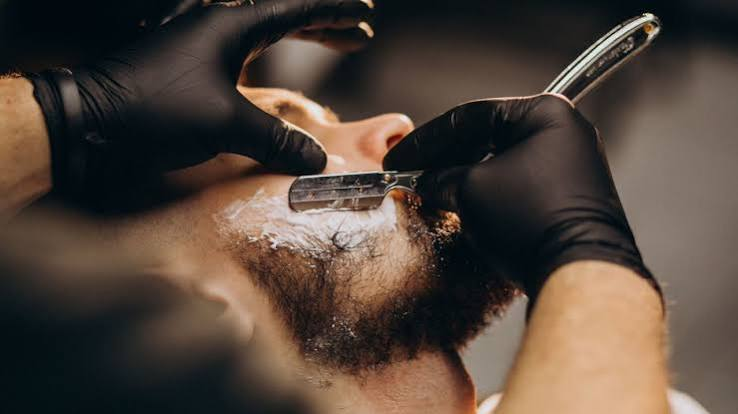

.jpg)
.jpg)
.jpg)

A Barbearia do Geguel nasceu do sonho de oferecer, além de um bom corte, um espaço de convivência para os homens do bairro. No início, contava apenas com uma cadeira e algumas tesouras, mas o capricho no acabamento logo chamou a atenção da vizinhança. Com o passar do tempo, a barbearia ganhou a confiança dos clientes e passou a atender cada vez mais pessoas todos os dias. A experiência acumulada ao longo dos anos ajudou o Geguel a aprimorar suas técnicas e deixar o atendimento ainda mais rápido e caprichado. Atualmente, a Barbearia do Geguel é conhecida pela atenção aos detalhes e pelo cuidado dedicado a cada cliente que senta na cadeira. Mais do que cortar cabelo, o Geguel construiu um ambiente onde amizade, conversa boa e respeito andam sempre juntos.
A Barbearia do Geguel oferece serviços completos de cuidado masculino, do corte tradicional ao acabamento na navalha. Entre os serviços estão corte de cabelo, barba desenhada, sobrancelha e limpeza de pele, sempre com produtos de qualidade. Também são realizados serviços especiais, como coloração e platinado, para quem busca um visual diferenciado. O objetivo é entregar um resultado impecável, aliado a um atendimento acolhedor que faz o cliente se sentir em casa. Para quem procura praticidade sem abrir mão da qualidade, o Geguel também conta com pacotes mensais de manutenção. Assim, a Barbearia do Geguel se firma como referência em estilo e cuidado para quem valoriza uma boa aparência.
